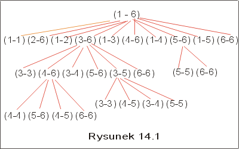

| « poprzedni punkt | nastêpny punkt » |
Problem
Dany jest ci±g macierzy A1, A2,...,An. Obliczyæ iloczyn A1 ´ A2 ´ ... ´ An, tak by koszt wykonania zadania by³ najmniejszy.
Wiadomo, ¿e dwie macierze mo¿emy pomno¿yæ tylko wtedy, gdy liczba kolumn w pierwszej z nich jest taka sama, jak liczba wierszy w drugiej. W powy¿szym problemie zak³adaæ bêdziemy, ¿e wymiary macierzy s± odpowiednie, aby ich pomno¿enie by³o mo¿liwe.
Niech p0, p1,... pn oznacza ci±g, w którym para (pi-1, pi) jest rozmiarem macierzy Ai (macierz Ai ma wiêc pi-1 wierszy i pi kolumn). Przy takim za³o¿eniu obliczenie iloczynu mo¿emy wykonaæ po kolei mno¿±c A1 przez A2, nastêpnie wynik przez A3 itd, albo mno¿±c najpierw macierze z jakiego¶ wybranego segmentu np. od Ai do Aj, a potem obliczaj±c iloczyn A1 ´... ´ Ai-1 ´ W ´ Aj+1´... ´ An, gdzie W = Ai ´ Ai+1 ´ ... ´ Aj. Oczywi¶cie pamiêtamy, ¿e mno¿enie macierzy nie jest przemienne, jest natomiast ³±czne i z tej w³asno¶ci bêdziemy w³a¶nie korzystaæ szukaj±c optymalnego rozwi±zania problemu.
Przyk³ad 2.1
Niech A, B i C bêd± macierzami o wymiarach odpowiednio (10 ´ 100), (100 ´ 5) i (5 ´ 50). Iloczyn tych macierzy mo¿emy obliczyæ albo licz±c najpierw iloczyn A ´ B a potem mno¿±c wynik przez C, albo najpierw licz±c B ´ C, a potem mno¿±c A przez otrzymany wynik. Macierze uzyskane w wyniku s± oczywi¶cie identyczne
(A ´ B) ´ C = A ´ (B ´ C).
Obliczmy liczbê wykonanych mno¿eñ skalarnych w obu przypadkach pamiêtaj±c, ¿e pomno¿enie macierzy o wymiarach (n ´ m) przez macierz o wymiarach (m ´ k) wymaga m* n * k mno¿eñ elementów tych macierzy, je¶li u¿ywamy zwyk³ego algorytmu opartego na algebraicznej definicji mno¿enia macierzy.
Dla wyra¿enia (A ´ B) ´ C mamy wiêc (10*100*5) + (10 *5 * 50) mno¿eñ, bo w wyniku pomno¿enia A przez B otrzymamy macierz o wymiarze (10 ´ 5). Wykonany wiêc 7500 mno¿eñ skalarnych.
Dla wyra¿enia A ´ (B ´ C) mamy (10*100*50) + (100 * 5 * 50) mno¿eñ, bo w wyniku mno¿enia B przez C otrzymamy macierz o wymiarach (100 ´ 50). Tym razem wykonamy 75000 mno¿eñ skalarnych. Ró¿nica jest istotna! J
Najprostszy pomys³ rozwi±zania problemu mno¿enia ³añcucha macierzy przedstawia nastêpuj±cy algorytm.
Algorytm naiwny
1. Rozwa¿yæ wszystkie mo¿liwe ustawienia nawiasów w ci±gu.
2. Dla ka¿dego ustawienia nawiasów wyliczyæ koszt mno¿enia.
3. Wybraæ to ustawienie nawiasów, przy którym koszt liczony liczb± wykonanych mno¿eñ jest najmniejszy.
4. Obliczyæ iloczyn macierzy dla wybranego ustawienia nawiasów.
Taki algorytm gwarantuje, ¿e liczba wykonanych mno¿eñ skalarnych (wykonujemy je tylko w punkcie czwartym tego algorytmu) jest minimalna. Punkty 1-3 powy¿szej metody maj± charakter pomocniczy. Przy ich realizacji wykonujemy jednak pewn± liczbê mno¿eñ i dodawañ liczb naturalnych. Zastanówmy siê jaki jest koszt z tym zwi±zany. Pytanie w³a¶ciwie dotyczy liczby przypadków, które trzeba rozwa¿yæ, gdy¿ punkt drugi wymaga co najwy¿ej O(n) mno¿eñ rzeczywistych dla ³añcucha z³o¿onego z n macierzy. Ile jest wiêc mo¿liwych ustawieñ nawiasów w ci±gu z³o¿onym z n macierzy?
Oznaczmy przez P(n) liczbê ustawieñ nawiasów w ci±gu n elementowym. Przyjmijmy, ¿e dla n=1, P(1)=1. Dla n=2 mamy tylko jedno ustawienie nawiasów, a dla n=3, dwa ustawienia, tak jak w przyk³adzie 2.1. Ogólnie, je¶li pierwszy nawias postawimy po pozycji ktej rozdzielaj±c ci±g mno¿eñ na dwa podci±gi A1 ´ A2 ´ ... ´ Ak i Ak+1 ´ Ak+2 ´ ... ´ An, to liczba ustawieñ nawiasów w tym przypadku wynosi P(k)*P(n-k). Poniewa¿ k mo¿e przyj±æ dowoln± z warto¶ci od 1 do n-1, wiêc otrzymujemy nastêpuj±cy wzór rekurencyjny:
P(1) = 1, P(n) = S k=1 ,...,n-1 P(k)*P(n-k) dla n>1 (*)
Zauwa¿my, ¿e P(4) = 5, P(5) = 14, a P(6) = 42. Funkcja ta do¶æ szybko ro¶nie. I rzeczywi¶cie
Lemat 2.1 Rozwi±zaniem równania rekurencyjnego (*) jest (n-1)sza liczba Catalana,
P(n)= c(n-1), gdzie c(n) = (2n nad n)/(n+1).
Formu³a Stirlinga (n! ~ sqrt(2np) nn/en) pozwala przybli¿yæ liczbê Catalana nastêpuj±co:
c(n) ~ 4n*n-3/2/sqrt(p).
Wynika st±d, ¿e liczba mo¿liwych ustawieñ nawiasów w ci±gu n macierzy jest wyk³adnicza. Nawet dla niewielkich warto¶ci n, taki algorytm by³by zbyt kosztowny. Musimy wiêc szukaæ innego rozwi±zania.
Lemat 2.2 Problem mno¿enia ³añcucha macierzy ma w³asno¶æ optymalnej podstruktury.
Nazwijmy optymalnym nawiasowaniem ci±gu A1, A2,...,An taki uk³ad nawiasów, dla którego koszt pomno¿enia wszystkich macierzy, mierzony liczb± mno¿eñ skalarnych, jest najmniejszy. Niech bêdzie optymalne nawiasowanie ci±gu A1, A2,...,An, w którym zosta³ on rozbity na dwa podci±gi A1 ´ A2 ´ ... ´ Ak i Ak+1 ´ Ak+2 ´ ... ´ An,
A1 ´ A2 ´ ... ´ An = (A1 ´ A2 ´ ... ´ Ak ) ´ ( Ak+1 ´ Ak+2 ´ ... ´ An).
Uk³ad nawiasów musi byæ optymalny zarówno w ci±gu A1 ´ A2 ´ ... ´ Ak, jak i w ci±gu Ak+1 ´ Ak+2 ´ ... ´ An, gdy¿ w przeciwnym razie mogliby¶my rozwa¿yæ inne nawiasowanie ca³ego ci±gu, daj±ce mniejszy koszt mno¿enia macierzy, ni¿ to, w tej chwili rozwa¿ane. Czyli optymalne rozwi±zanie problemu mie¶ci w sobie optymalne rozwi±zania dla podproblemów. Ten fakt zachêca do zastosowania metody programowania dynamicznego.
Zajmijmy siê teraz policzeniem kosztu rozwi±zania optymalnego. Niech m(i,j) bêdzie minimaln± liczb± mno¿eñ skalarnych potrzebnych do policzenia iloczynu Ai ´ A2 ´ ... ´ Aj dla i £ j. Mamy m(i,i) = 0, oraz dla i<j
m(i,j) = min {m(i,k) + m(k+1, j) + pi-1*pk*pj : i £ k < j}. (**)
W minimum po prawej stronie równo¶ci (**), k zmienia siê od i do j-1, co odpowiada ustawieniu pierwszego nawiasu po pozycji ktej. W wyniku mno¿enia macierzy Ai ´ Ai+1 ´ ... ´ Ak otrzymamy macierz o wymiarach pi-1´ pk, a w wyniku mno¿enia macierzy Ak+1 ´ Ak+2 ´ ... ´ Aj macierz o wymiarach pk´ pj . Koszt pomno¿enia tych macierzy wynosi wiêc pi-1*pk*pj. Je¶li k wybierzemy tak, by warto¶æ m(i,k) + m(k+1,j) + pi-1*pk*pj by³a najmniejsza, to koszt pomno¿enia Ai ´ Ai+1 ´ ... ´ Aj jest najmniejszy z mo¿liwych. Oznaczmy tê wybran± warto¶æ k przez s(i,j).
Mo¿e siê wydawaæ, ¿e obliczenie warto¶ci m(i,j) mo¿emy powierzyæ procedurze rekurencyjnej. Gdyby¶my u¿yli wprost wzoru (**) do policzenia warto¶ci m(i,j), to musieliby¶my wywo³ywaæ rekurencyjnie tê procedurê dla podproblemów (i,k) i (k+1,j), dla wszystkich k od i do j. To jednak w konsekwencji doprowadzi³oby do dalszych rekurencyjnych wywo³añ, przy czym wiele ze spotkanych podproblemów powtarza³oby siê.
Na rysunku 14.1 przedstawili¶my fragment drzewa mo¿liwych rekurencyjnych wywo³añ przy obliczaniu m(1,6). Drzewo to ma dwa typy wierzcho³ków: wierzcho³ki z etykietami i-j, odpowiadaj±ce wywo³aniu rekurencyjnemu funkcji m(i,j), oraz wierzcho³ki oznaczone pojedyncz± liczb±, wskazuj±c± podzia³ aktualnego zadania na dwa podzadania. Zauwa¿my, ¿e w wielu wierzcho³kach wystêpuj± te same wska¼niki. Oznacza to ponowne wykonanie tego samego rekurencyjnego obliczenia.
|  |
Pytanie 2: Jaki by³by koszt algorytmu rekurencyjnego obliczania wszystkich warto¶ci m(i,j)?
Rzeczywi¶cie, obliczenie warto¶ci m(1,n) mogliby¶my oszacowaæ za pomoc± funkcji rekurencyjnej T(n), takiej ¿e T(1) ³1, T(n) ³ (1+ Sk=1,...,n-1(T(k) + T(n-k) + 1) dla n>1. Zak³adamy, ¿e na wykonanie instrukcji pocz±tkowych oraz porównania przy wyborze minimum potrzebujemy jednostkê czasu. £atwo sprawdziæ, ¿e musi byæ T(n) ³ 2n-1, tzn . rozwi±zaniem jest funkcja rosn±ca co najmniej tak szybko jak 2n-1. A wiêc koszt obliczenia warto¶ci m(1,n) by³by wyk³adniczy.
Wyci±gnijmy jednak z tych rozwa¿añ wniosek pozytywny: skoro podproblemy, które musimy rozwa¿aæ powtarzaj± siê, nasz problem ma w³asno¶æ wspólnych podproblemów. Jeszcze jeden sygna³, ¿e byæ mo¿e metoda programowania dynamicznego da dobre rezultaty. Zamiast wiêc powtarzaæ obliczenia wielokrotnie dla tych samych podproblemów, zapamiêtajmy wcze¶niej wyliczone warto¶ci w tablicy.
|
||||||||||||||||||||||||||||||||||||||||||||||||||||||||||||||||||||||
K³opot polega teraz tylko na ustaleniu, w jakim porz±dku wyliczaæ wielko¶ci m(i,j). Zauwa¿my, ¿e przy obliczaniu m(i,j) korzystamy we wzorze (**) z warto¶ci m(i,i), m(i,i+1),...,m(i,j-1) oraz z warto¶ci m(i+1,j), m(i+2,j),..., m(j,j). S± to elementy i-tego wiersza i j-tej kolumny. Wynika st±d, ¿e wyliczenie m(i,j) powinni¶my wykonywaæ wzd³u¿ diagonali, zgodnie z numeracj± przedstawion± na rysunku 14.2 Otrzymujemy st±d nastêpuj±cy algorytm:
Algorytm MM
| { | |
|
| for i := 1 to n do m(i,i) := 0; | //inicjalizacja diagonali | |
| for l :=2 to n do | // l= numer diagonali | |
| for i := 1 to n-l+1 do | //kolejne pozycje l-tej diagonali | |
| j := i + l - 1 ; | |
|
| m(i,j) := +¥ ; | |
|
| for k := i to j-1 do | //szukamy najlepszego podzia³u | |
| q := m(i,k) + m(k+1,j) + pi-1*pk *pj; | ||
| if q< m(i,j) then m(i,j) := q; s(i,j):= k fi | //s(i,j) zapamiêtujemy indeks, przy którym osi±gniêto minimum | |
| od | ||
| od | ||
| od | ||
| } | |
|
Koszt algorytmu
W algorytmie wystêpuj± trzy zagnie¿d¿one pêtle. Ka¿da z nich wykonuje siê rzêdu O(n) razy, zatem koszt czasowy algorytmu mo¿na oszacowaæ przez O(n3). Koszt pamiêciowy natomiast jest kwadratowy O(n2) i zwi±zany jest z konieczno¶ci± zapamiêtania warto¶ci m(i,j) oraz s(i,j).
Przyk³ad 2.2
Przypu¶æmy, ¿e mamy sze¶æ macierzy A1 (4 ´ 2), A2 (2´ 3), A3 (3 ´ 1), A4 (1 ´ 2),A5 (2 ´ 2), A6 (2 ´ 3) i chcemy obliczyæ iloczyn A1 ´ A2 ´ ... ´ A6. Obliczmy zgodnie z algorytmem MM minimaln± liczbê mno¿eñ skalarnych, któr± trzeba wykonaæ przy obliczaniu tego iloczynu. W tabeli na rysunku 14.3 przedstawili¶my warto¶ci m(i,j), a warto¶ci najlepszych podzia³ów w tablicy s. Na przyk³ad do policzenia m(2,5) potrzebujemy warto¶ci:
m(2,2) + m(3,5) + 2*3*2 = 0 + 10 + 12 = 22,
m(2,3) + m(4,5) + 2*1*2 = 6 + 4 + 4 = 14,
m(2,4) + m(5,5) + 2*2*2 = 10 + 0 + 8 = 18.
Najmniejsza warto¶æ to 14 i dlatego m(2,5) = 14. Poniewa¿ zosta³a ona osi±gniêta, gdy k=3 (tzn. nawias postawiono po trzeciej macierzy) wiêc s(2,5)= 3. Optymalne ustawienie nawiasów w tym przyk³adzie wygl±da nastêpuj±co :
A1 ´ A2 ´ ... ´ A6= (A1 ´ (A2 ´ A3)) ´ ((A4 ´ A5) ´ A6).
Najmniejsza liczba mno¿eñ skalarnych to w tym przyk³adzie 36.J
|
|
||||||||||||||||||||||||||||||||||||||||||||||||||||||||||||||||||||||||||||||||||||||||||||||||||||||||||||||||||||||||||||||||||||||||||||||||||||||||||||||||||||||||||||||||||||||||||||||||||||||||||||||||||||||||
Maj±c wszystkie warto¶ci s(i,j) dla i<j mo¿emy wypisaæ optymalne nawiasowanie. Nastêpuj±cy rekurencyjny algorytm "wypisz" odczytuje z tablicy s pozycje, w których maj± byæ umieszczone nawiasy w optymalnym nawiasowaniu.
| wypisz( i,j : int){ | |
|
| if (i = j) then | ||
| write (i) | // wypisujemy numer macierzy, która ma w tym miejscu wystêpowaæ. | |
| else | ||
| if (i < j) then | ||
| write("("); | |
|
| wypisz (i, s(i,j)); | //wypisz optymalne ustawienie nawiasów w ci±gu i,...,s(i,j) | |
| write("´"); | |
|
| wypisz(s(i,j)+1, j); | //wypisz optymalne ustawienie nawiasów w ci±gu s(i,j)+1,...,j | |
| write(")"); | |
|
| fi; | ||
| fi } | |
|
Koszt procedury wypisz jest liniowy ze wzglêdu na liczbê mno¿onych macierzy.
Skoro umiemy wypisaæ optymalny uk³ad nawiasów, to mo¿emy tê wiedzê wykorzystaæ, wykonuj±c w odpowiedniej kolejno¶ci mno¿enie macierzy. Algorytm wyliczania iloczynu ³añcucha macierzy, korzystaj±cy z tablicy najlepszego nawiasowania s przedstawiono jako rekurencyjn± funkcjê mult. Zak³adamy, ¿e dany jest ³añcuch macierzy A1, A2, ..., An, dla którego wyliczono wcze¶niej najlepsze nawiasowanie zapamiêtane w tablicy s(i,j). Wynikiem tej funkcji jest iloczyn A1 ´ A2 ´ ... ´ An, a liczba mno¿eñ u¿yta do wyliczenia tego iloczynu jest najmniejsza z mo¿liwych.
| mult( i,j : int){ | ||
| if (i < j) then | |
|
| X := mult (i, s(i,j) ); | |
|
| Y := mult (s(i,j)+1, j) | |
|
| return X ´ Y; | |
|
| else | |
|
| return Ai | ||
| fi; | |
|
| } | |
|
Pytanie 3: Rozwa¿my macierze A1 (4 ´ 2), A2 (2´ 300), A3 (300 ´ 1), A4 (1 ´ 2),A5 (2 ´ 2), A6 (2 ´ 300). Jaka jest minimalna liczba mno¿eñ skalarnych potrzebna do obliczenia iloczynu A1 ´ A2 ´ ... ´ A6?
| « poprzedni punkt | nastêpny punkt » |